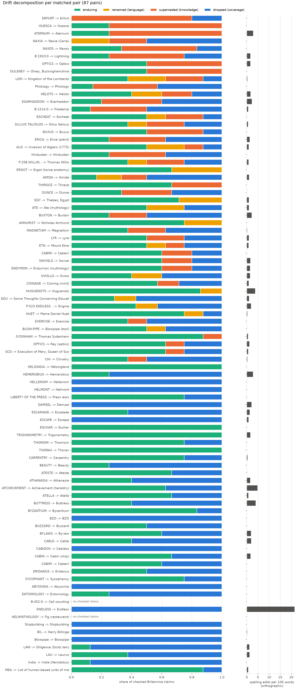
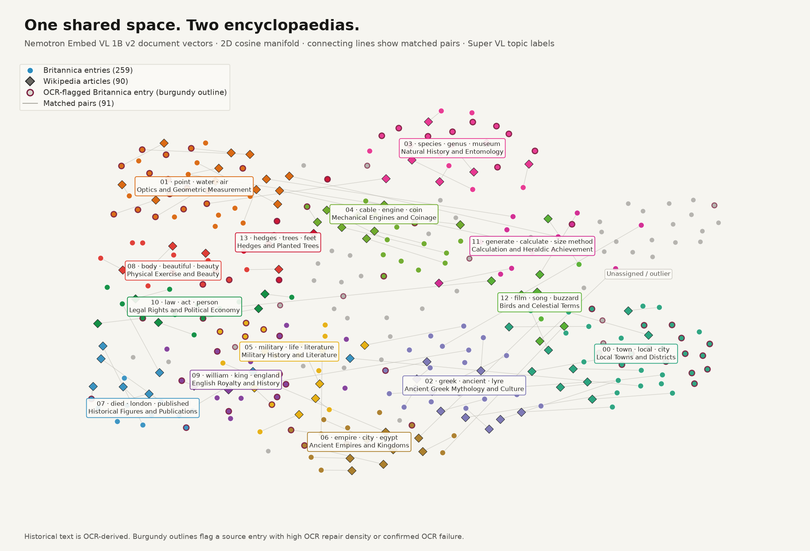
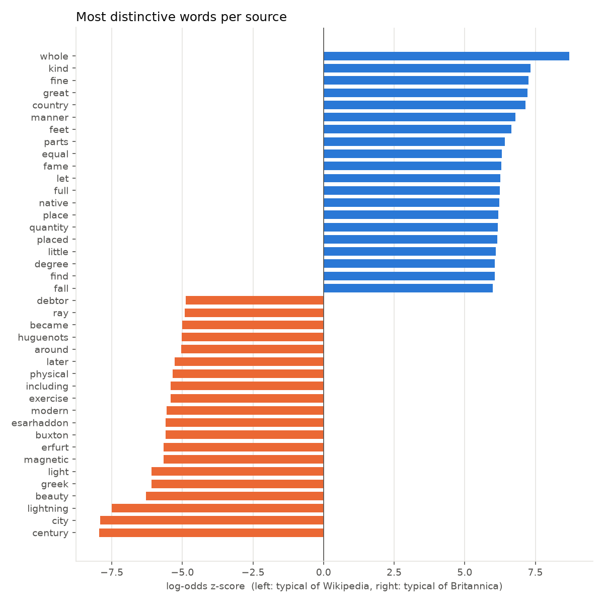
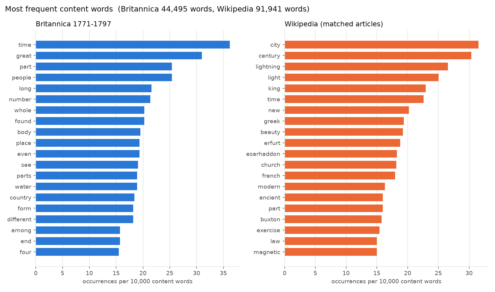

Analysis
What changed between the Encyclopaedia Britannica (editions from 1768 to 1860) and today's Wikipedia, measured on our 100 scans. All numbers on this page come from saved pipeline outputs.
Coverage
Why entries have no clear counterpart
Grouped from the match reason of each entry.
Why pages have no clear counterpart
Grouped from the match reason of each page.
The cause of each uncertain page and entry (no usable text, Parse/OCR failure, obsolete or minor subject, candidate pool miss, threshold miss, other) is in docs/uncertainty.md.
Drift: what kind of change
Explore every checked claim and term pair →
enduring: still true today · renamed: same thing, new name (change in language) · superseded: knowledge changed · dropped: Britannica claim with no counterpart in Wikipedia. Spelling edits per 100 words: 0.979. Old to new term pairs: 153. Wikipedia-only topics: 382.
Old to new term pairs
| Britannica (1768-1860) | Wikipedia | Entry |
|---|---|---|
| Botnhic gulph | Gulf of Bothnia | B:1017:11 |
| deficits | lacewings | B:1017:15 |
| flares | serfs | B:1017:9 |
| filters | helots | B:1017:9 |
| femme | women | B:1017:9 |
| legislative assembly | newspapers | B:1166:0 |
| inflammable air | firedamp | B:1214:0 |
| dephlogilitated air | blackdamp | B:1214:0 |
| haunk or flaqls | shaft | B:1214:0 |
| planet of metal | planchet | B:1250:1 |
| laminating engine | rolling mill | B:1250:1 |
| fleer fits | dies | B:1250:1 |
| Nazos | Ναξία | B:1268:1 |
| NAXIA | Naxos City | B:1268:2 |
| lake of Naoxe | Cyclades island group | B:1268:2 |
| kingdom of Granada | autonomous community of Aragon | B:1327:1 |
| free of Armouth | bishopric of Avranches | B:1327:4 |
| Demonstrate du rival and semi porti- constitutes | Demonstratio evangelica | B:1327:4 |
| rife | common use | B:1327:8 |
| fen | son | B:1473:0 |
| Sandoshina | Ashurbanipal | B:1473:0 |
| Shanghai | king | B:1473:0 |
| Sealana | Escalade | B:1473:1 |
| counterfeary | battlements | B:1473:1 |
| reverentes | talus walls | B:1473:1 |
| tenparts | tenements | B:1473:7 |
| cry | crown | B:1473:7 |
| Aquinat | Thomas Aquinas | B:1614:5 |
| carpentry | timber framing | B:1680:0 |
| wright | carpenter | B:1680:0 |
| housewright | carpenter | B:1680:0 |
| barnwright | carpenter | B:1680:0 |
| joiner | finish carpenter | B:1680:0 |
| animal economy | overall health | B:1805:5 |
| active exercise | aerobic exercise | B:1805:5 |
| passive exercise | static exercise | B:1805:5 |
| animal spirits | physiological well-being | B:1805:5 |
| gymnastic exercises | strength and resistance training | B:1805:5 |
| pyrognostic operations | analysis of small samples | B:1818:0 |
| carbonated hydrogen gas | mixed hydrogen and oxygen | B:1818:0 |
| sentient beings | observers | B:1828:0 |
| association | response-dependent property | B:1828:0 |
| agreeable feelings | pleasure | B:1828:0 |
| inward feelings | subjective feelings | B:1828:0 |
| electric fire | electric charge | B:1910:0 |
| natural electricity | electrostatic discharges | B:1910:0 |
| prime conductor | lightning rod | B:1910:0 |
| electrical atmosphere | electric field | B:1910:0 |
| hilloy | Punica | B:2001:5 |
| second Ponte | Second Punic War | B:2001:5 |
| bay | law | B:2001:5 |
| Nono | Nero | B:2001:5 |
| Rje | Este | B:2171:10 |
| polygania aqualia order | daisy family | B:2171:13 |
| fyngeneria class | daisy family | B:2171:13 |
| fluid | escutcheon | B:2171:4 |
| marhalled | depiction | B:2171:4 |
| goddels of mithief | personification of moral blindness and error | B:2171:6 |
| Jupiter | Zeus | B:2171:6 |
| Atlana fabule, or Atelani Inda | Atellan farce | B:2171:8 |
| Nespolis | Nola | B:2171:8 |
| Lucerna | Roman | B:2171:9 |
| Alteris | Pescara | B:2171:9 |
| batment | architectural structure | B:2250:1 |
| fleeples | Gothic buildings | B:2250:1 |
| abbys | ancient (typically Gothic) buildings | B:2250:1 |
| medicinal waters | thermal waters | B:2250:3 |
| St Am’s well | St Ann's Well | B:2250:3 |
| mineral foam, vapoon, or finite | geothermal spring | B:2250:3 |
| monocina terrandia elids | family Buxaceae | B:2250:4 |
| hawk kind | birds of prey | B:2250:6 |
| BYLAWS, or ByrŁLAWS | by-law (bye-law, by (e) law, by (e) law) | B:2250:8 |
| friends | strands | B:2464:10 |
| flip | ship | B:2464:5 |
| fleerage | ship | B:2464:5 |
| cabinets | mystery cult | B:2464:7 |
| fests, gods | Cabeiri | B:2464:8 |
| loft horn | callosity | B:2473:10 |
| pattern join | fetlock | B:2473:10 |
| tufi | feather | B:2473:10 |
| Upper Saxony | Thuringia | B:2473:9 |
| elckor of Menus | Electorate of Mainz | B:2473:9 |
| ring | connection | B:251:1 |
| cylindrical pivot | cylindrical rod | B:251:1 |
| hybrid | frame | B:251:1 |
| ship's ride | boat | B:251:1 |
| tops | nautical sector | B:251:1 |
| backache | MD | B:251:5 |
| Wanilor Eagle | Wynford Eagle | B:251:5 |
| Dorforth | Dorset | B:251:5 |
| Elisban | Kaleb | B:2569:0 |
| Mahomestants | Muslims | B:2569:0 |
| Habessinien | Habesha | B:2569:0 |
| insect | spider | B:261:0 |
| genus | order | B:261:0 |
| cabinets of curiosity | natural history societies | B:261:0 |
| ichneumon | parasitoid wasp | B:261:0 |
| fixed air | carbon dioxide | B:261:0 |
| Lat-mos | Mount Latmus | B:523:5 |
| bewenly bodies | movements of the moon | B:523:5 |
| moo | Selene | B:523:5 |
| Zie Grafjnaar | The Craftsman | B:560:2 |
| Jedo | Tokyo | B:560:6 |
| European Turkey | East Thrace | B:604:2 |
| Exiton | Euxine Sea (Black Sea) | B:604:2 |
| Boskolome | Bosporus | B:604:2 |
| refrangible | refraction | B:681:0 |
| homogeneous | geometric optics | B:681:0 |
| MAGIC LANTERN | projector | B:681:0 |
| Ouvus | echinus | B:713:5 |
| arrows heads | V-shapes | B:713:5 |
| manner's needle | compass needle | B:756:0 |
| radiant | point source | B:851:0 |
| imaginary focus of the incident rays | virtual image | B:851:0 |
| centre | optical axis | B:851:0 |
| flatclamber at Wetherden | Fotheringhay Castle | P:1284 |
| conspiracy of Bologony | Babington Plot | P:1284 |
| scarded | joined | P:13 |
| boys'l away | navy | P:13 |
| Natural philosophy | sciences | P:1422 |
| monality | virtue | P:1422 |
| classical learning | Greek and Latin texts | P:1422 |
| mechanical art | practical education | P:1422 |
| Thebes | Waset | P:1430 |
| City of Amun | njw.t-jmn | P:1430 |
| Sceptre nome | fourth Upper Egyptian nome | P:1430 |
| horse in military expeditions | cavalryman | P:1649 |
| fought on horriback | horse-mounted men | P:1649 |
| Roman equities | Roman cavalry | P:1649 |
| bahacion character | chivalric character | P:1649 |
| dielpine and con-a few of war | military follower owning a war horse | P:1649 |
| borate of soda | borax | P:1818 |
| chelys | turtle shell | P:1904 |
| Chilliance | Catholicism | P:2051 |
| Haffan | Baba Mohammed ben-Osman | P:2307 |
| bashy | Deylik | P:2307 |
| internal fire | magma | P:247 |
| sulphureous exalations | volcanic gases | P:247 |
| focus of the volume | magma chamber | P:247 |
| induicie legator | days allowed for appearance | P:2479 |
| Hinturas | Hindustan | P:2524 |
| manundem | Taj Mahal | P:2524 |
| Myckling | physician | P:258 |
| flyt of phyfeic | practice of medicine | P:258 |
| fifathmande abby | Westminster Abbey | P:258 |
| perfus, or alligator pear tree | avocado | P:268 |
| Svvxxax | Laurus | P:268 |
| alligator pear | avocado | P:268 |
| Abyssian | Ge'ez | P:403 |
| Chaldaic | Aramaic | P:403 |
| musosaurs | monsoons | P:499 |
| Hendreta | Herodotus | P:499 |
| ENGINS for extingufliling Fires | fire engine | P:523 |
ſ misread as f in fitteenth vs ſixteenth).Confirmed historical shifts on the scan
| Entry | Kind | Britannica (OCR / Scan) | Wikipedia | Super VL Scan Note |
|---|---|---|---|---|
| B:1017:11 | term_pairs | Botnhic gulph Scan: Bothnic gulph | Gulf of Bothnia | The scan prints the archaic term Bothnic gulph, which is a historical name for the Gulf of Bothnia. |
| B:2473:10 | term_pairs | loft horn Scan: loft horn | callosity | The scan prints loft horn, an 18th-century term for the ergot, which modern sources call a callosity. |
| B:2473:10 | term_pairs | tufi Scan: tufi | feather | The scan prints the archaic spelling "tufi" for tuft, which is a genuine historical term rather than an OCR error. |
| B:2171:6 | term_pairs | Jupiter Scan: Jupiter | Zeus | The scan prints Jupiter, the Roman name, while Wikipedia uses Zeus, the Greek equivalent, reflecting a genuine historical terminology shift. |
| B:2464:5 | term_pairs | fleerage Scan: fleeage | ship | The scan prints the archaic term fleeage, an 18th-century spelling of flage meaning a ship's deck or upper works, not an OCR corruption of ship. |
| B:604:2 | term_pairs | European Turkey Scan: European Turkey | East Thrace | The scan prints European Turkey, an 18th-century term for the Ottoman-held European territory now called East Thrace. |
| B:1910:0 | term_pairs | electric fire Scan: electric fire | electric charge | The scan prints the 18th-century term electric fire, which is a genuine historical term for what is now called electric charge. |
| B:1910:0 | term_pairs | prime conductor Scan: prime conductor | lightning rod | The scan clearly prints the historical term prime conductor, which is an older name for a lightning rod. |
| B:1910:0 | term_pairs | electrical atmosphere Scan: electrical atmosphere | electric field | The scan prints the 18th-century term electrical atmosphere, which is a genuine historical term distinct from the modern term electric field. |
| B:713:1 | superseded | Olney is situated nine miles South-east of Northampton. Scan: OULNEY, a market-town of Buckinghamshire, situated nine miles south-east of Northampton. | Olney, Buckinghamshire | The scan prints 'OULNEY' and 'nine miles south-east of Northampton', matching the OCR quote and differing from Wikipedia's modern '10 miles' distance. |
| P:258 | superseded | Thomas Willis was born in Great Bedwyn, Wiltshire in 1611. Scan: was born at Great Bodwin, in WildHere, in 1611 | Thomas Willis | The scan prints Great Bodwin, WildHere, and 1611, which are archaic or erroneous historical readings that differ from modern Wikipedia. |
| B:2473:9 | superseded | Erfurt is a large and beautiful city in Upper Saxony, Germany. Scan: ERFURT, a large and beautiful city of Upper Saxony in Germany, capital of Thuringia, and subject to the elector of Mentz | Erfurt | The scan prints 'Upper Saxony' and 'capital of Thuringia', so the historical regional label is genuine, not an OCR misreading. |
| B:560:6 | renamed | Amida is a god worshipped by the Japanese. Scan: AMIDA, a god worshipped by the Japanese | Amida | The scan prints 'AMIDA, a god worshipped by the Japanese', matching the OCR and confirming the historical claim rather than an OCR error. |
| P:2307 | renamed | The expedition was ordered by Charles. Scan: Even ladies of birth and character attended Charles in his expedition, | Invasion of Algiers (1775) | The scan prints 'Charles' without a regnal number, while Wikipedia identifies him as Charles III, a genuine historical naming difference rather than an OCR misreading. |
| P:2307 | renamed | The Algerian leader was named Hassan. Scan: Haffan | Invasion of Algiers (1775) | The scan prints 'Haffan' (long-s for Hassan), a genuine 18th-century spelling of the Algerian leader's name, not an OCR error. |
Caught OCR illusions filtered out
| Entry | Kind | Apparent OCR Drift | Actual Scan Reading | Super VL Scan Note |
|---|---|---|---|---|
| B:560:2 | term_pairs | Zie Grafjnaar | The Craftsman | The scan clearly prints The Craftsman, so Zie Grafjnaar is an OCR misreading of the old-style type. |
| B:1327:8 | term_pairs | rife | rise | The scan prints 'rise' with a long-s, which the OCR misread as 'rife'. |
| B:1473:7 | term_pairs | tenparts | tenements | The scan clearly prints the word tenements, so the OCR reading tenparts is a misreading of the old type. |
| B:1473:7 | term_pairs | cry | crown | The scan clearly prints 'crown' in the phrase 'fell back to the lost of the crown', so the OCR reading 'cry' is a misreading of the worn type. |
| B:2250:8 | term_pairs | BYLAWS, or ByrŁLAWS | BY-LAWS, or BYE-LAWS | The scan prints BY-LAWS, or BYE-LAWS, so the OCR's ByrŁLAWS is a misreading of the long s and hyphenated spelling, not a genuine historical term shift. |
| B:251:5 | term_pairs | backache | bachelor of his faculty | The scan prints "bachelor of his faculty", not "backache", so the OCR misread the word and the pair is not a genuine historical shift. |
| B:251:5 | term_pairs | Wanilor Eagle | Winford Eagle | The scan prints Winford Eagle, so the OCR's Wanilor is a misreading and not a historical name change. |
| B:251:5 | term_pairs | Dorforth | Dorsetshire | The scan prints Dorsetshire, not Dorforth, so the OCR misread the word and the apparent rename is false. |
| B:2473:10 | term_pairs | pattern join | pattern-joint | The scan prints pattern-joint, not pattern join, and the OCR split the hyphenated word and dropped the hyphen. |
| B:2171:6 | term_pairs | goddels of mithief | ATE, the goddesf of mifchief, in the Pagan theology. | The scan prints long-s as f, so OCR read goddesf as goddels and mifchief as mithief, but the actual words are goddess and mischief. |
| B:2171:9 | term_pairs | Lucerna | ATERNUM, a town of Lucania in Italy, now Alerni, (Cluvenus): Also a town in the territory of the Piceni, now Pescara, a port-town of Naples, situated on the Adriatic. E. Long. 15. 25. N. Lat. 42. 30. | The scan prints Lucania, not Lucerna, so the OCR misread the word and created a false old-to-new term pair. |
| B:2171:9 | term_pairs | Alteris | ATERNUM, a town of Lucania in Italy, now Alterni, (Cluvenius): also a town in the territory of the Piceni, now Pescara, a port-town of Naples, situated on the Adriatic. | The scan prints Pescara, not Alteris, so the OCR misread the entry and the apparent rename is false. |
| B:2171:4 | term_pairs | fluid | field | The scan prints the word field, which the OCR misread as fluid, and the term escutcheon does not appear in the passage. |
| B:2171:4 | term_pairs | marhalled | marshalled | The scan prints marshalled, so the OCR reading marhalled is a misreading, and the term is not a renamed concept. |
| B:2464:5 | term_pairs | flip | ship | The scan prints the long-s form of ship, which the OCR misread as flip. |
| B:1327:4 | term_pairs | free of Armouth | bishopric of Avranches | The scan prints bishopric of Avranches, so the OCR's free of Armouth is a misreading of that phrase. |
| B:1327:4 | term_pairs | Demonstrate du rival and semi porti- constitutes | Demonstratio evangelica constitutes | The scan prints Demonstratio evangelica, and the OCR misread it as Demonstrate du rival and semi porti-. |
| B:2464:7 | term_pairs | cabinets | cabiria | The scan prints cabiria, a festival term, not cabinets, so the OCR misread the word and created a false contrast with mystery cult. |
| B:2464:8 | term_pairs | fests, gods | CABIRIA, festivals in honour of the cabiri, celebrated in Thebes and Lemnos, but especially in Samothracia, an island consecrated to the cabiri. All who were initiated into the mysteries of these gods, were thought to be secured thereby from storms at sea, and all other dangers. | The scan prints CABIRIA, not fests, gods, and the OCR misread long-s and other letters, corrupting the passage about the Cabeiri. |
| B:1910:0 | term_pairs | natural electricity | natural electricity | The scan clearly prints the phrase natural electricity, so the OCR quote's mention of protons and sloos torna is a misreading, not a genuine historical term shift. |
| B:1473:7 | superseded | Escheat occurs from the extinction of the blood of the tenant by natural or criminal means. | from the extinction of the blood of the latter by either natural or civil means | The scan prints natural and civil, not the OCR's anaural and crist, so the difference is an OCR misreading of the long s and worn letters. |
| B:1473:7 | superseded | Escheat occurs if the tenant's blood is corrupted by attainder or felony. | if his blood was corrupted and tainted by commiſſion of treaſon or felony | The scan clearly prints the historical escheat rule about corrupted blood from treason or felony, so the OCR quote is a misreading and the claim matches the scan. |
| B:251:5 | superseded | He died in 1695 | He died in 1689 | The scan clearly prints 1689, so the OCR quote of 1695 is a misreading and the historical date is unchanged. |
| B:713:3 | superseded | The ounce is the fifteenth part of a pound avoirdupois | the sixteenth part of a pound avoirdupois | The scan prints a long-s in 'sixteenth', which the OCR misread as 'fitteenth', so the apparent difference from Wikipedia's one-sixteenth is an OCR error. |
| B:2171:9 | superseded | Aternum is now called Alteris. | ATERNUM, a town of Lucania in Italy, now Aterni, (Cluvenus): also a town in the territory of the Piceni, now Pescara, a port-town of Naples, situated on the Adriatic. E. Long. 15. 25. N. Lat. 42. 30. | The scan prints Aterni, not Alteris, and the OCR also misread Lucania as Lucerna and Cluvenus as Chorusas, so the claimed rename is an OCR misreading. |
Shared embedding topic space
259 Britannica entries and 90 matched Wikipedia articles embedded with nvidia/llama-nemotron-embed-vl-1b-v2 (2,048-d), grouped with cosine clustering and c-TF-IDF, and refined with nvidia/Nemotron-3.5-Super-VL topic labels. 69 of 91 matched pairs fall into the same cluster. Details in docs/topics.md.
Topic clusters refined by Super VL
| ID | Super VL Topic Label | Top c-TF-IDF Terms | Brit. | Wiki | Summary |
|---|---|---|---|---|---|
| 00 | Local Towns and Districts | {'term': 'town', 'score': 0.0327, 'count': 63} · {'term': 'local', 'score': 0.02005, 'count': 37} · {'term': 'city', 'score': 0.01987, 'count': 43} · {'term': 'district', 'score': 0.0169, 'count': 25} · {'term': 'built', 'score': 0.01676, 'count': 31} | 33 | 9 | This cluster covers geographic locations and settlements in historical and modern sources. It includes towns, cities, districts, and universities built near rivers. |
| 01 | Optics and Geometric Measurement | {'term': 'point', 'score': 0.01403, 'count': 87} · {'term': 'water', 'score': 0.01169, 'count': 73} · {'term': 'air', 'score': 0.01085, 'count': 62} · {'term': 'angle', 'score': 0.01072, 'count': 56} · {'term': 'surface', 'score': 0.01055, 'count': 57} | 26 | 12 | This cluster examines light, angles, and surfaces in physical science. It connects historical studies of optics and trigonometry with modern articles on measurement and carpentry. |
| 02 | Ancient Greek Mythology and Culture | {'term': 'greek', 'score': 0.03925, 'count': 71} · {'term': 'ancient', 'score': 0.02798, 'count': 51} · {'term': 'lyre', 'score': 0.02048, 'count': 24} · {'term': 'zeus', 'score': 0.02021, 'count': 24} · {'term': 'according', 'score': 0.02011, 'count': 36} | 20 | 10 | This cluster explores figures and concepts from ancient Greece. It includes gods, mythological characters, and terms related to Hellenistic history. |
| 03 | Natural History and Entomology | {'term': 'species', 'score': 0.06652, 'count': 49} · {'term': 'genus', 'score': 0.04939, 'count': 30} · {'term': 'museum', 'score': 0.03749, 'count': 24} · {'term': 'native', 'score': 0.03492, 'count': 24} · {'term': 'leaves', 'score': 0.03128, 'count': 19} | 19 | 7 | This cluster focuses on biological classification and natural specimens. It covers species, genera, insects, and plants found in museums and across Europe. |
| 04 | Mechanical Engines and Coinage | {'term': 'cable', 'score': 0.02695, 'count': 22} · {'term': 'engine', 'score': 0.02295, 'count': 19} · {'term': 'coin', 'score': 0.02174, 'count': 18} · {'term': 'engines', 'score': 0.0195, 'count': 15} · {'term': 'coins', 'score': 0.01933, 'count': 16} | 14 | 9 | This cluster discusses mechanical devices and currency systems. It includes engines, cables, anchors, and the process of coining money. |
| 05 | Military History and Literature | {'term': 'military', 'score': 0.01094, 'count': 37} · {'term': 'life', 'score': 0.01048, 'count': 40} · {'term': 'literature', 'score': 0.01041, 'count': 33} · {'term': 'war', 'score': 0.00943, 'count': 37} · {'term': 'roman', 'score': 0.00935, 'count': 36} | 15 | 7 | This cluster covers warfare, literary traditions, and historical periods. It connects Roman and medieval history with studies of oratory and philology. |
| 06 | Ancient Empires and Kingdoms | {'term': 'empire', 'score': 0.01824, 'count': 64} · {'term': 'city', 'score': 0.01609, 'count': 64} · {'term': 'egypt', 'score': 0.01323, 'count': 41} · {'term': 'india', 'score': 0.01305, 'count': 41} · {'term': 'ancient', 'score': 0.01303, 'count': 54} | 12 | 8 | This cluster examines historical states and civilizations across Asia and Europe. It includes Egypt, India, Thrace, and Byzantium. |
| 07 | Historical Figures and Publications | {'term': 'died', 'score': 0.02251, 'count': 35} · {'term': 'london', 'score': 0.02245, 'count': 35} · {'term': 'published', 'score': 0.02222, 'count': 35} · {'term': 'oxford', 'score': 0.02192, 'count': 30} · {'term': 'john', 'score': 0.01887, 'count': 31} | 11 | 8 | This cluster profiles notable English scholars and their works. It includes biographical details of individuals who lived in London and Oxford. |
| 08 | Physical Exercise and Beauty | {'term': 'body', 'score': 0.01879, 'count': 42} · {'term': 'beautiful', 'score': 0.01341, 'count': 23} · {'term': 'beauty', 'score': 0.01317, 'count': 22} · {'term': 'physical', 'score': 0.01264, 'count': 24} · {'term': 'objects', 'score': 0.01252, 'count': 23} | 12 | 4 | This cluster addresses physical activity and aesthetic qualities. It covers exercise, the human body, and concepts of beauty in objects. |
| 09 | English Royalty and History | {'term': 'william', 'score': 0.01778, 'count': 33} · {'term': 'king', 'score': 0.01769, 'count': 37} · {'term': 'england', 'score': 0.01659, 'count': 31} · {'term': 'country', 'score': 0.015, 'count': 30} · {'term': 'elizabeth', 'score': 0.01432, 'count': 21} | 14 | 2 | This cluster focuses on monarchs and historical events in England. It includes figures such as William, Elizabeth, and Mary. |
| 10 | Legal Rights and Political Economy | {'term': 'law', 'score': 0.0174, 'count': 46} · {'term': 'act', 'score': 0.01371, 'count': 31} · {'term': 'person', 'score': 0.01316, 'count': 31} · {'term': 'power', 'score': 0.01234, 'count': 34} · {'term': 'property', 'score': 0.01205, 'count': 27} | 11 | 5 | This cluster explores laws, property, and governmental power. It covers legal acts, liberties, and economic theories. |
| 11 | Calculation and Heraldic Achievement | {'term': 'generate', 'score': 0.20714, 'count': 11} · {'term': 'calculate', 'score': 0.2051, 'count': 10} · {'term': 'size method', 'score': 0.2051, 'count': 10} · {'term': 'achievement', 'score': 0.20243, 'count': 10} · {'term': 'cells', 'score': 0.18756, 'count': 12} | 12 | 1 | This cluster deals with methods of calculation and symbolic achievement. It includes terms related to cell size and heraldic achievements. |
| 12 | Birds and Celestial Terms | {'term': 'film', 'score': 0.14573, 'count': 20} · {'term': 'song', 'score': 0.14125, 'count': 17} · {'term': 'buzzard', 'score': 0.1175, 'count': 13} · {'term': 'hawk', 'score': 0.1175, 'count': 13} · {'term': 'endless', 'score': 0.104, 'count': 12} | 2 | 7 | This cluster connects birds of prey with astronomical and cultural terms. It includes buzzards, hawks, and references to Eridanus and Amida. |
| 13 | Hedges and Planted Trees | {'term': 'hedges', 'score': 0.04024, 'count': 24} · {'term': 'trees', 'score': 0.03547, 'count': 23} · {'term': 'feet', 'score': 0.02734, 'count': 20} · {'term': 'height', 'score': 0.02715, 'count': 17} · {'term': 'hedge', 'score': 0.02502, 'count': 14} | 5 | 1 | This cluster describes vegetative barriers and wildlife habitats. It covers hedges, trees, and their height in natural settings. |




Word frequencies
259 Britannica entries (44495 tokens) vs 82 matched Wikipedia articles (91941 tokens). Method: content words (a-z, 3+ letters, stopwords removed, long s folded); log-odds z with informative Dirichlet prior, alpha = 0.01 x pooled counts.
More typical of Britannica (1768-1860)
Bar length is the log-odds z score.
More typical of Wikipedia
Bar length is the log-odds z score.
Most frequent in Britannica
| word | Brit. /10k | Wiki /10k |
|---|---|---|
| time | 36.18 | 22.62 |
| great | 31.01 | 12.29 |
| part | 25.4 | 15.99 |
| people | 25.4 | 12.4 |
| long | 21.58 | 10.66 |
| number | 21.35 | 10.22 |
| whole | 20.23 | 3.05 |
| found | 20.23 | 12.07 |
| body | 19.55 | 7.94 |
| place | 19.33 | 6.85 |
| even | 19.33 | 11.53 |
| see | 19.1 | 7.18 |
| parts | 18.88 | 6.2 |
| water | 18.88 | 7.07 |
| country | 18.43 | 4.79 |
Most frequent in Wikipedia
| word | Brit. /10k | Wiki /10k |
|---|---|---|
| city | 7.19 | 31.54 |
| century | 1.12 | 30.35 |
| lightning | 1.12 | 26.54 |
| light | 8.54 | 25.02 |
| king | 13.48 | 22.95 |
| time | 36.18 | 22.62 |
| new | 11.01 | 20.23 |
| greek | 4.72 | 19.36 |
| beauty | 4.05 | 19.25 |
| erfurt | 0.22 | 18.82 |
| esarhaddon | 0.22 | 18.27 |
| church | 8.09 | 18.16 |
| french | 7.87 | 17.95 |
| modern | 4.05 | 16.31 |
| ancient | 8.99 | 15.99 |
Engraving plates: visual matching
Picture-only pages. Super VL describes the plate; BM25 finds candidates; Embed VL ranks them by plate image to article text cosine; Rerank VL scores the plate image against each candidate. A match needs Rerank VL and Embed VL to agree.
| Plate | Super VL subject | Status | BM25 top 1 | Embed VL top 1 | Rerank VL top 1 | logit | Reason |
|---|---|---|---|---|---|---|---|
 270 270 |
Hydrostatics | matched | Hydrostatic skeleton | Hydrostatics | Hydrostatics | -1.66 | Rerank VL top 1 equals Embed VL top 1 |
 374 374 |
blank page | no_clear_counterpart | Blank page (disambiguation) | Intentionally blank page | Blank page (disambiguation) | -1.34 | Super VL reports a blank page |
 651 651 |
Helminthology | no_clear_counterpart | Journal of Helminthology | Helminthology | Journal of Helminthology | -2.41 | Rerank VL and Embed VL disagree and the logit is below tau |
 948 948 |
Zoology | no_clear_counterpart | Zoology journal | Libellula | Snowy Owl (Audubon) | -3.47 | Rerank VL and Embed VL disagree and the logit is below tau |
 1400 1400 |
Midwifery | no_clear_counterpart | Oyo State College of Nursing and Midwifery | Amyoplasia | Midwife | -2.85 | Rerank VL and Embed VL disagree and the logit is below tau |
 1615 1615 |
blank page | no_clear_counterpart | Blank page (disambiguation) | Copybook (education) | Blank page (disambiguation) | -1.62 | Super VL reports a blank page |
 1845 1845 |
Colombia map | no_clear_counterpart | Unguía Fault | Joaquín Acosta | Unguía Fault | -2.32 | Rerank VL and Embed VL disagree and the logit is below tau |
 2077 2077 |
Microscope | no_clear_counterpart | Microscope (disambiguation) | Vignette (graphic design) | Commutative diagram | -2.87 | Super VL reports a blank page |
 2209 2209 |
Astronomy | no_clear_counterpart | Cultural astronomy | Celestial globe | Heliocentric astrology | -2.14 | Rerank VL and Embed VL disagree and the logit is below tau |
 2243 2243 |
Astronomy | no_clear_counterpart | Cultural astronomy | Geocentrism | Heliocentric astrology | -1.82 | Rerank VL and Embed VL disagree and the logit is below tau |